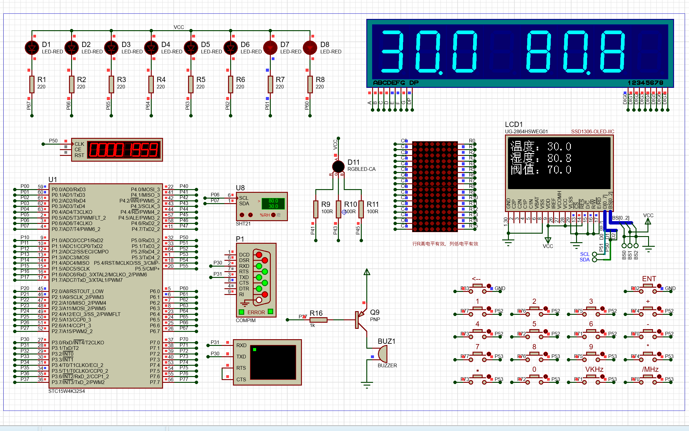

系统说明
本地工程采用定时任务调度结构，将传感采样、数码管显示、按键阈值调节、 电机控制与蜂鸣器告警拆分为独立任务模块。网页端则将这些功能以科技风面板重新可视化， 方便你在 GitHub Pages 上集中展示作品的架构与亮点。
这类详情页适合按“项目简介 - 仿真演示 - 核心代码”的方式复用， 所以后续每个项目都可以保持一致的阅读体验。
DIGITAL CLIMATE NODE / 01
这是当前项目的独立详情页，聚焦展示环境检测、阈值控制、 显示联动与 Protues 仿真结果。后续如果你继续增加新项目， 只需要复用这个详情页结构，再替换对应内容即可。
PROJECT OVERVIEW
本系统面向工作区环境感知场景，通过 SHT21 采集温湿度数据， 再由主控完成阈值判断、显示刷新与执行器联动，适合作为嵌入式课程设计、 智能环境监测与个人作品集展示项目。
本地工程采用定时任务调度结构，将传感采样、数码管显示、按键阈值调节、 电机控制与蜂鸣器告警拆分为独立任务模块。网页端则将这些功能以科技风面板重新可视化， 方便你在 GitHub Pages 上集中展示作品的架构与亮点。
这类详情页适合按“项目简介 - 仿真演示 - 核心代码”的方式复用， 所以后续每个项目都可以保持一致的阅读体验。
SHT21 通过 IIC 完成湿度与温度采样，周期测量并缓存到全局变量。
数码管负责快速直读，OLED 负责温度、湿度与阈值的结构化展示。
按键支持湿度阈值上下调节，电机依据阈值比较结果自动启停。
当温度超过预设告警线时，蜂鸣器立即触发，形成环境异常提示。
PROTEUS VISUALIZATION
这里保留项目专属的大图展示区，便于你后续替换为新的仿真截图、实验照片或录屏封面。

CORE SOURCE
代码窗口参考 VS Code / Linux 终端风格，下面内容已结合你本地工程的核心逻辑整理展示。
#include "SHT21.h"
#include "Control.h"
#include "oled.h"
void Task_100ms(void)
{
SHT21_Task(); // 获取温度和湿度
Display_Task(); // 数码管刷新
Motor_Task(); // 湿度阈值联动
Key_Task(); // 按键调节阈值
Buzzer_Task(); // 超温蜂鸣器报警
}
void Task_1000ms(void)
{
show_temp(Temperture_SHT21, 0);
show_temp(Humidity_SHT21, 2);
show_temp(Humidity_Set, 4);
}void SHT21_Task(void)
{
static uint8_t state = 0;
if (++time >= 10) {
time = 0;
switch (state) {
case 0: // 启动湿度测量
case 2: // 启动温度测量
case 4: // 等待下一次周期
}
}
}
void Motor_Task(void)
{
if (Humidity_SHT21 > Humidity_Set) {
Motor_Forward();
} else {
Motor_Stop();
}
}void Display_Task(void)
{
temp = Temperture_SHT21; // 300 -> 30.0
humi = Humidity_SHT21; // 805 -> 80.5
DisBuf[7] = temp / 100 % 10;
DisBuf[6] = temp / 10 % 10;
DisBuf[5] = temp % 10;
DisBuf[4] = 23;
DisBuf[3] = humi / 100 % 10;
DisBuf[2] = humi / 10 % 10;
DisBuf[1] = humi % 10;
Point = 0x44;
}
void Buzzer_Task(void)
{
if (Temperture_SHT21 > 350) {
BEEP = 0;
} else {
BEEP = 1;
}
}